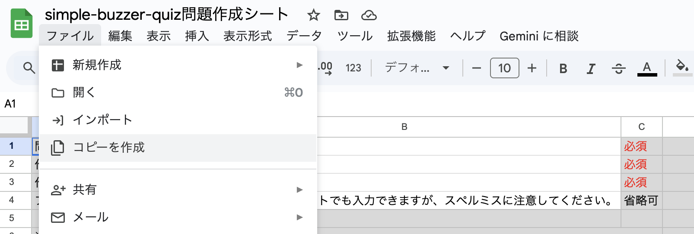
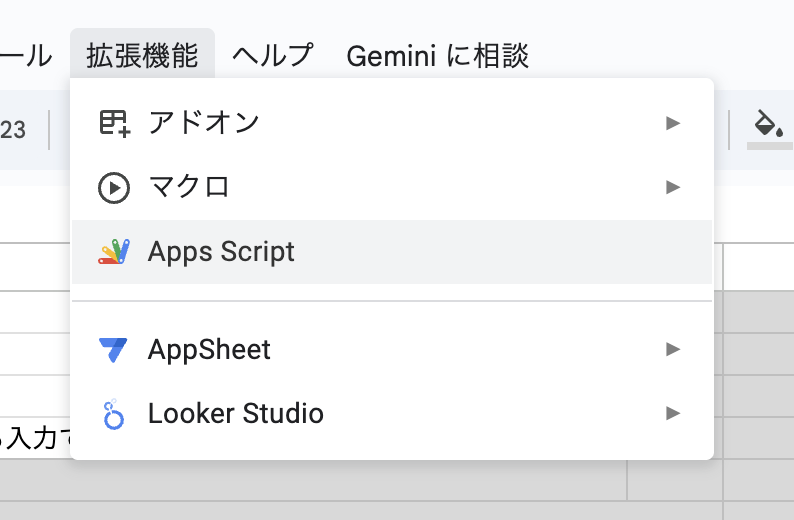
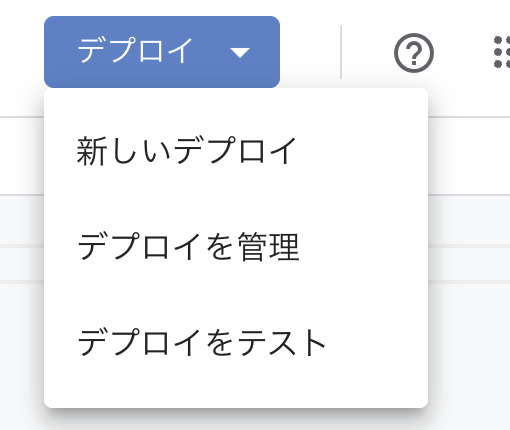
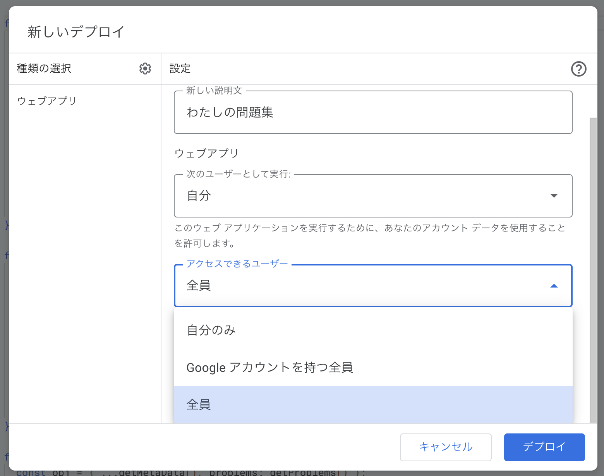
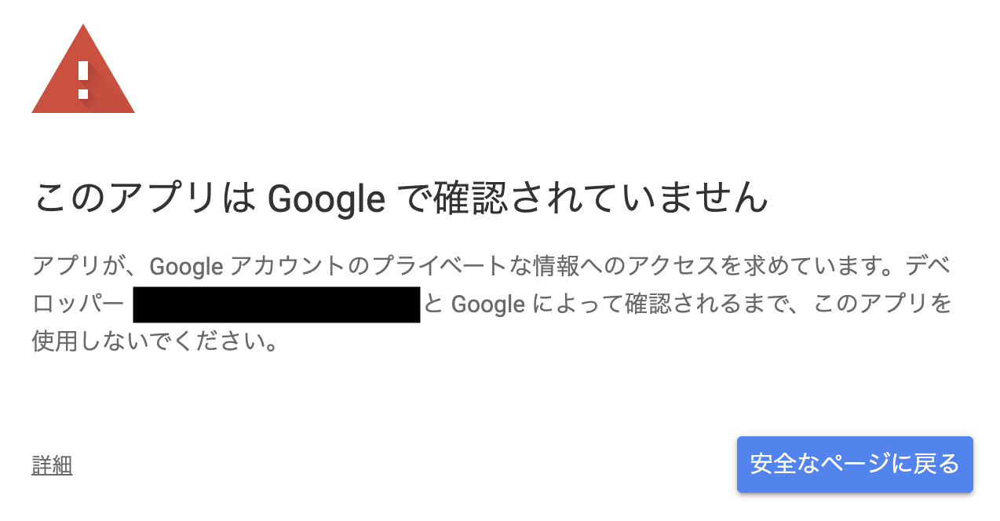
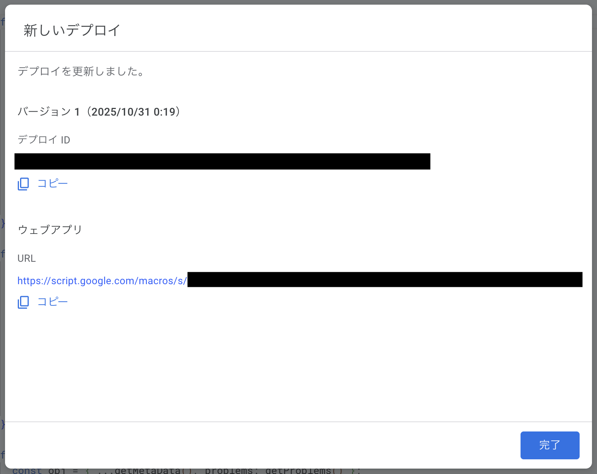

一度設定してしまえばスプレッドシートで問題を管理できて便利ですが、ロードはやや重くなります。

このシート を開いて、「ファイル」メニューからコピーを作成してください。

「拡張機能」メニューから「Apps Script」を開いてください。

画面右上の「デプロイ」ボタンから、「新しいデプロイ」を選択してください。

「種類の選択」で「ウェブアプリ」を選び、「次のユーザーとして実行」を「自分」、「アクセスできるユーザー」を「全員」としてデプロイしてください。

初回は権限の承認が必要になる場合があります。画面左下の「詳細」から承認できます。

成功すると URL が発行されます。これを忘れずにコピーしておいてください。
コピーした URL の先頭にある「https://」を、次の文字列に書き替えてください「https://zk-phi.github.io/simple-buzzer-quiz/?」。
この URL が、あなたのオリジナル問題で遊ぶための URL になります。ためしにアクセスしてみて、サンプル問題が読み込まれることを確認してください。
Apps Script の画面は、もう使わないので閉じてしまって大丈夫です。
あとはあなたの問題をスプレッドシートに記入するだけです！スプレッドシートを保存すれば、すぐにゲームに反映されます。
作成した問題は、SNS やホームページなどで自由に共有していただいて構いません。
プログラマーさんなど、自力でなんとかできる方はこちらがおすすめです。
このアプリでは、以下の形式の JSON ファイルを開くことができます。 サンプル
answers に指定できるのは「小文字英数字」または「ひらがな」のどちらかになります。 かなとアルファベットが混在するような解答は、現時点では設定できません🙇
JSON ファイルを適当な場所にアップロードして、「https://zk-phi.github.io/simple-buzzer-quiz/?」の後ろに続けて、URL を書いて下さい（「https://」 は不要）。GitHub Gist あたりが便利だと思います。
作成した問題は、SNS やホームページなどで自由に共有していただいて構いません。